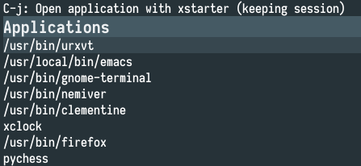
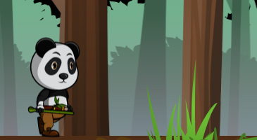

Projects
xstarter
Application launcher for Linux
Links: website | source code
It lives in terminal and works well with tiling window managers (e.g. xmonad, i3 etc).
C, ncurses

SanchoSQL
Postgres desktop client
Links: website | source code
SanchoSQL is a desktop client application for PostgreSQL database. It allows viewing and manipulating database objects.
C++, GTK+ (gtkmm)

Knight General
Turn-based strategy for Ludum Dare 42. Theme: Running out of space
Knight General is inspired by classic turn-based strategy games. The aim of the game is to control the whole map (so that the enemy ‘runs out of space’). To do so, a player can move their units into enemy territory, thus increasing their possessions. Each player can buy more units, all of which can fight the enemies and collect resources. Units are bought with coins, which each player collects by:
- gathering resources
- receiving a payout at the beginning of each turn, which depends on the size of owned land
{kind=link}
C++, SFML
Links:
Scipio
a simple static website generator written in Rust.
Rust
Links: source code
Simple ECS
A simple header-only implementation of an entity-component system.
C++
Links: source code
Cookiecutter template for C++ projects
Generates a new C++ project built with CMake.
CMake
Links: source code
Cookiecutter template for C projects
Generates a new C project built with CMake.
CMake
Links: source code
simplepacker
Simplepacker is a command-line tool that can create sprite sheets/sprite atlases.
Python
Links: source code
$ simplepacker -i ./examples -o output2.jpg --height 200 --padding 5 --json
derid
Terminal-based, dired-inspired file manager (in progress)
C++, ncurses
Links: source code
helm-xstarter
This Emacs package offers a Helm interface for xstarter. It loads a list of installed applications and lets a user select one to launch.
Links: source code

Ney
A header-only parallel functions library for Intel Xeon/Xeon Phi/GPUs.
C++
Links: source code
Language Monster
Language Monster - games to teach foreign languages vocabulary.
Python, Django, JavaScript
Links: source code

Pimp my tank
A video game created for GitHub Game Off 2016 (Theme is Hacking, Modding, or Augmenting).
The aim of the game is to control your tank and hit other players’ (human or computer controlled) tanks. The user the modify his/her tank (by buying new weapons, changing tank’s colour) as well as alter the environment (by changing the wind speed which makes shooting missiles quite tricky).
C++, SFML
Links: - source code - gameplay video
{kind=link}
Spaceoid
Puzzle game for Android
Java, libgdx
Links: source code

*knights*
An attempt at making a classic real-time strategy game
C++, SFML
Links: source code
{kind=link}
Personal Emacs config
Links: source code
dotfiles
Personal configuration for xmonad, dzen, zsh etc.
Links: source code